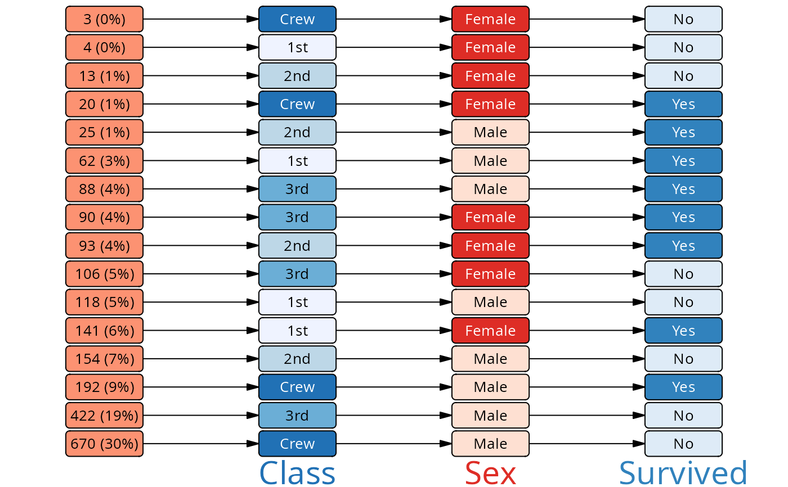

Plot a pattern object
plot.vtree_pattern.RdPlots a vtree pattern object.
Arguments
- x
A vtree pattern object.
- ...
Additional arguments passed to plot.vtree()
- sort_by
The variable to sort the nodes by. Can be "freq" (default), "n", or any of the variable names in the pattern object. If NA, the pattern will be plotted in the order of the rows in the pattern object.
- palettes
A vector of color palettes to use for the nodes.
- pattern_fill
The fill color for the pattern nodes (the ones on the left side of the tree, showing how frequent each pattern is).
- lwidth, lheight
The width and height of the nodes in the plot, relative to the maximum available space.
- show_root
Whether to show the root node in the plot.
See also
plot.vtree() for plotting vtree objects.
Examples
vt <- vtree_from_freqtable(Titanic, Class, Sex, Survived)
pat <- pattern(vt) |> dplyr::arrange(-Survived_n)
plot(pat)
